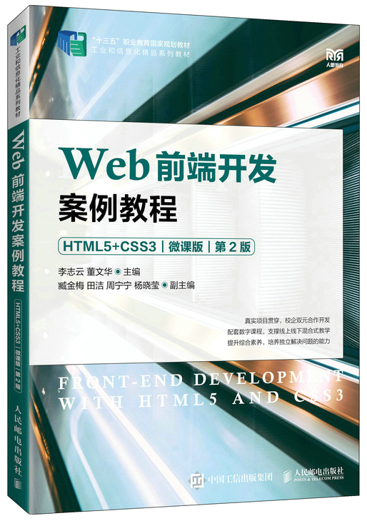

首页 > 书籍下载
《Web前端开发案例教程（HTML5+CSS3）》PDF下载（高清完整版）
|  | 作者：李志云、董文华 |
| 出版时间：2023年01月01日 | |
| 出版社：人民邮电出版社 | |
| ISBN：9787115600233 | |
| 总页数：275 |
这是一本 Web 前端开发案例教程，以信息学院网站为载体，介绍如何利用 HTML5 和 CSS3 等制作静态网站。可以作为高职院校计算机专业的教材，也可以作为 Web 前端开发爱好者和参考用书。
这里提供的是《Web前端开发案例教程（HTML5+CSS3）（微课版）（第2版）》的高清 PDF 下载，内容完整，附带目录标签。
这本书共划分为12个任务，每个任务都实现一个相对独立的功能，任务过程中充分利用CSS3的过渡、变形等属性实现图片的变换和旋转等效果，拓宽开发思路。不管你的基础是扎实还是薄弱，跟着这本书学习，思路都会非常清晰，所以大胆的拿起它来学习吧！
和其它同类型的书籍相比，这本书主要有以下几个特点：
- 自然地融入了思政元素；
- 采用任务式教学，把一个项目拆分成多个任务进行讲解；
- 校企合作研发，项目更具实操性；
- 被纳入“十三五”职业教育国家规划教材；
- 配有大量的微课视频和教学资源，便于线上线下混合教学；
- 配有丰富的课后习题，达到学练结合。
书籍目录
- 任务1 创建第一个HTML5网页
- 1．1 任务描述
- 1．2 知识准备
- 1．3 任务实现
- 任务小结
- 习题1
- 实训1
- 扩展阅读
- 任务2 搭建简单学院网站
- 2．1 任务描述
- 2．2 知识准备
- 2．3 任务实现
- 任务小结
- 习题2
- 实训2
- 扩展阅读
- 任务3 美化简单学院网站
- 3．1 任务描述
- 3．2 知识准备
- 3．3 任务实现
- 任务小结
- 习题3
- 实训3
- 扩展阅读
- 任务4 制作学院介绍页面
- 4．1 任务描述
- 4．2 知识准备
- 4．3 任务实现
- 任务小结
- 习题4
- 实训4
- 扩展阅读
- 任务5 制作学院网站导航条
- 5．1 任务描述
- 5．2 知识准备
- 5．3 任务实现
- 任务小结
- 习题5
- 实训5
- 扩展阅读
- 任务6 制作学院新闻块
- 6．1 任务描述
- 6．2 知识准备
- 6．3 任务实现
- 任务小结
- 习题6
- 实训6
- 扩展阅读
- 任务7 制作学生信息表
- 7．1 任务描述
- 7．2 知识准备
- 7．3 任务实现
- 任务小结
- 习题7
- 实训7
- 扩展阅读
- 任务8 制作学生信息注册表单
- 8．1 任务描述
- 8．2 知识准备
- 8．3 任务实现
- 任务小结
- 习题8
- 实训8
- 扩展阅读
- 任务9 布局学院网站主页
- 9．1 任务描述
- 9．2 知识准备
- 9．3 任务实现
- 任务小结
- 习题9
- 实训9
- 扩展阅读
- 任务10 使用CSS3实现动画效果
- 10．1 任务描述
- 10．2 知识准备
- 10．3 任务实现
- 任务小结
- 习题10
- 实训10
- 扩展阅读
- 任务11 完整项目：制作学院网站
- 11．1 任务描述
- 11．2 网站规划
- 11．3 效果图设计
- 11．4 制作网站主页
- 11．5 制作新闻列表页
- 11．6 制作新闻详情页
- 11．7 制作视频宣传页
- 11．8 添加网页动态效果
- 任务小结
- 扩展阅读
- 任务12 完整项目：制作化妆品网站
- 12．1 任务描述
- 12．2 网站规划
- 12．3 制作网站主页
- 12．4 制作网站登录页面
- 12．5 制作网站注册页面
- 任务小结
- 扩展阅读
书籍下载
一键登录，免费下载完整版 PDF，文件名称：《Web前端开发案例教程（HTML5+CSS3）（微课版）（第2版）》.pdf